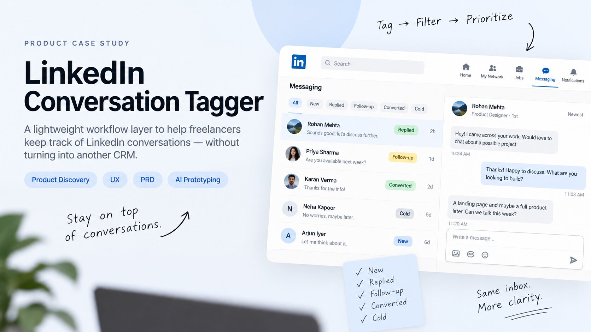

SpecLens — AI Product Discovery Engine
Turns rough product ideas into guided discovery, structured product state, PRDs, critique loops, and code-ready prototypes.
AI ProductProduct DiscoveryRAGLive MVP

Computer Science graduate and product builder focused on product discovery, AI products, rapid prototyping, analytics, and turning ambiguous problems into clearer product decisions.
A focused set of work across product discovery, AI, workflow automation, and analytics.
Turns rough product ideas into guided discovery, structured product state, PRDs, critique loops, and code-ready prototypes.
Cloud-first workflow that turns product data into KPI analysis, a complete funnel, segment/feature insights, AI-assisted hypotheses, experiments, and automated reports.

Product workflow · 2026Lightweight workflow layer for conversation states, prioritization, and follow-up without automated LinkedIn actions.
n8n workflow that analyzes public Reel performance data, classifies content, and surfaces performance patterns and outliers.
I work across problem framing, user flows, product requirements, Figma, analytics, APIs, and rapid prototyping. My strength is moving between product thinking and technical execution when it helps reduce uncertainty.
Nov 2023 – Jan 2024
B.Tech — Computer Science & Engineering · 2022–2026
Product Management · Pendo × Mind the Product
Kotler’s Marketing Management Concepts
Executive Diploma in Strategic Management
Open to Product, APM, and product-building opportunities.